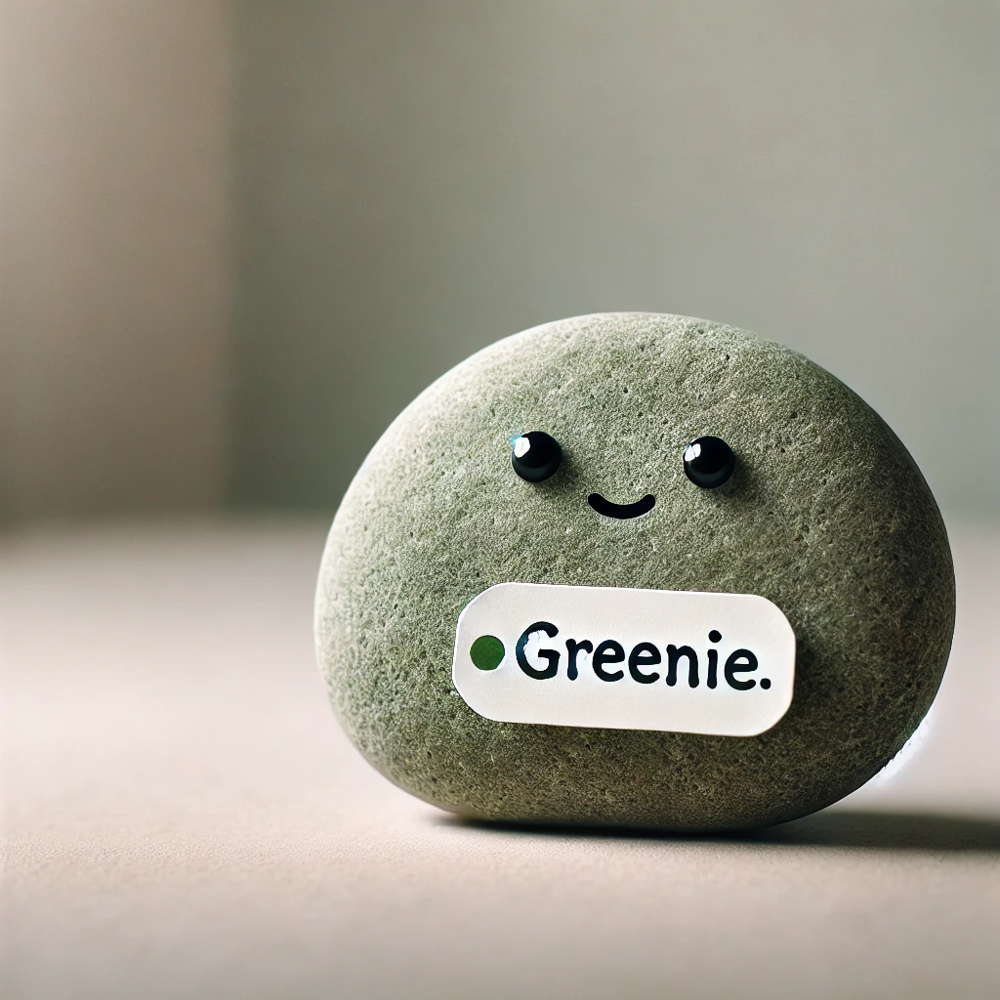
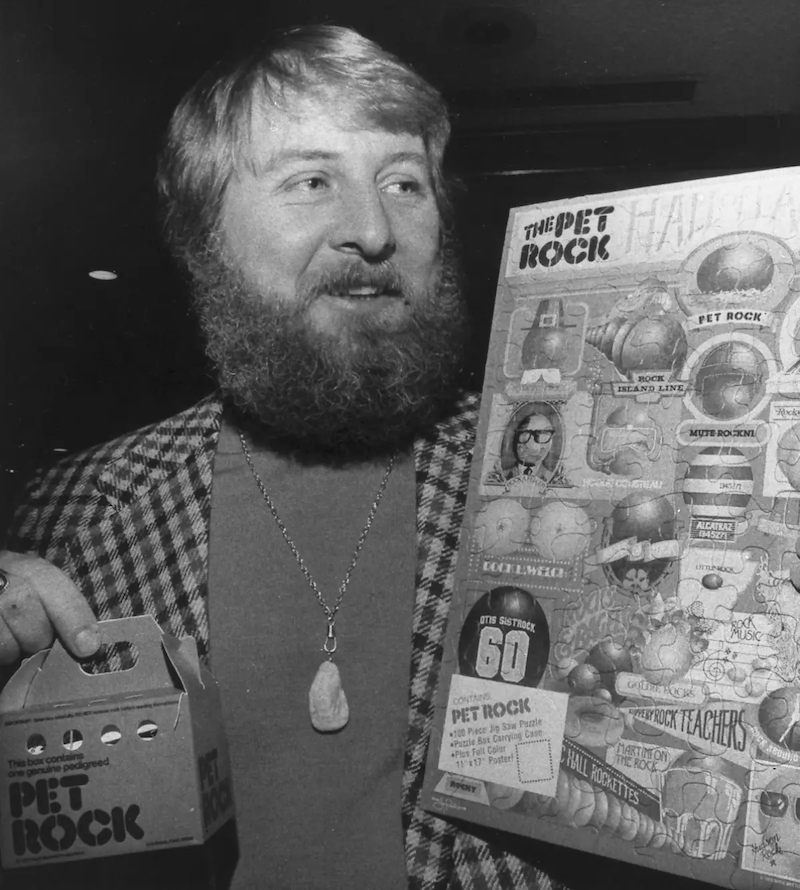
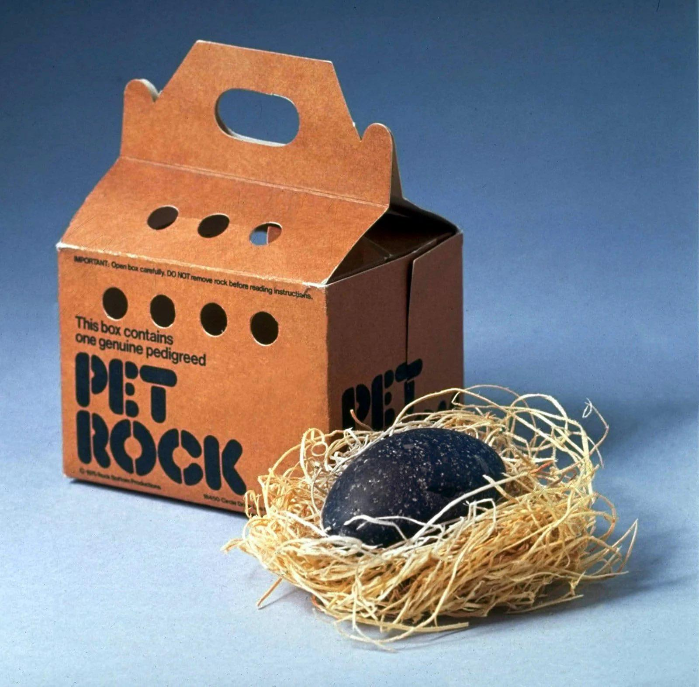
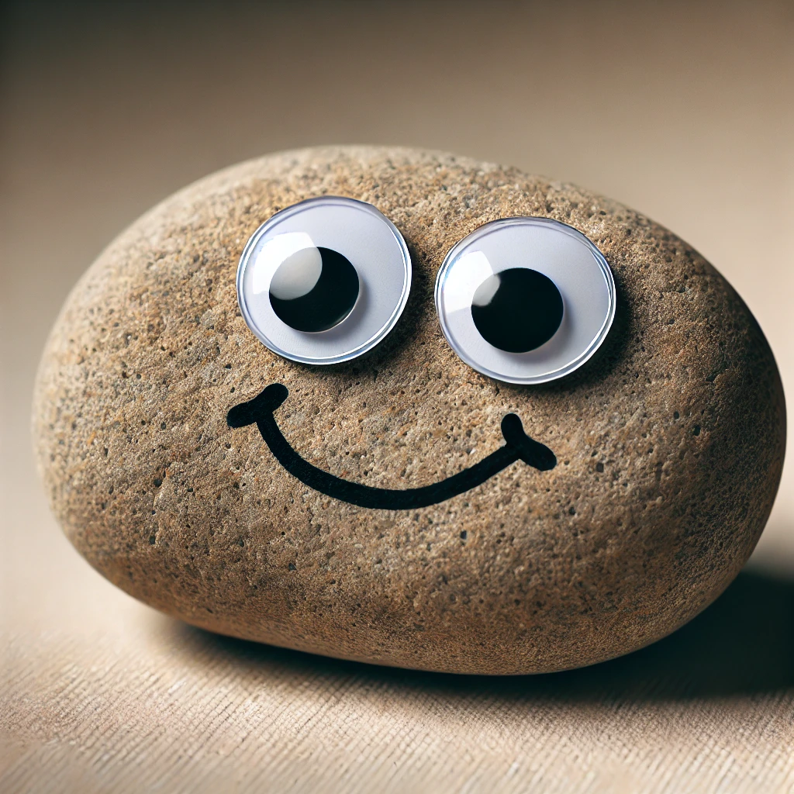

About My Pet Rock
Greenie
My pet rock is a small rock that I found in the park. I named him "Greenie" because he is not green.
History
Gary Dahl
Gary Dahl was an advertising executive who became famous in 1975 for creating one of the most peculiar and successful novelty items in history: the Pet Rock. The idea struck Dahl during a conversation with friends about the hassles of pet ownership. Jokingly, he suggested that the easiest pet would be a rock—it didn’t need to be fed, walked, or cleaned up after. This humorous concept evolved into a fully developed product, with Dahl packaging ordinary rocks in a cardboard box complete with breathing holes and a tongue-in-cheek training manual.
The Pet Rock
The simplicity and absurdity of the Pet Rock made it an instant hit. At the time, novelty and gag gifts were popular, and Dahl’s clever marketing tapped into the public’s sense of humor. The Pet Rock became a cultural phenomenon, selling over a million units in just six months. Despite being nothing more than a smooth stone from Mexico, the Pet Rock’s playful packaging and the accompanying “care guide” created the illusion that it was a real, manageable pet. The concept appealed to consumers who were looking for a laugh or an inexpensive gift, and at $3.95 each, it was a low-risk purchase.
Legacy
Gary Dahl’s success with the Pet Rock was fleeting but remarkable. While the craze only lasted about six months, it earned him millions of dollars and secured his place in pop culture history. Despite some criticism for the gimmicky nature of the product, Dahl viewed it as a creative and entrepreneurial success, demonstrating the power of humor and clever marketing. Although Dahl later returned to advertising and writing, the Pet Rock remains his legacy as a testament to the whimsical and sometimes surprising nature of consumer trends.
Facts
Anatomy

- Common Name: Pet Rock
- Average Size: 2–5 inches in diameter
- Weight: 200–500 grams
- Lifespan: Indefinite (eternal, barring erosion or extreme circumstances)
Zoological Chart
Lapidus domestica
- Kingdom: Mineralia
- Phylum: Lithophyta
- Class: Sedentaria
- Order: Inanimata
- Family: Geologia
- Genus: Lapidus
- Species: Lapidus domestica